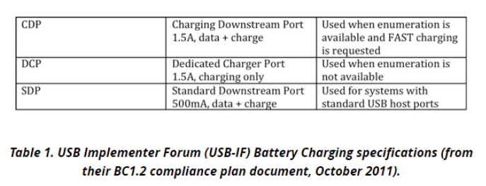
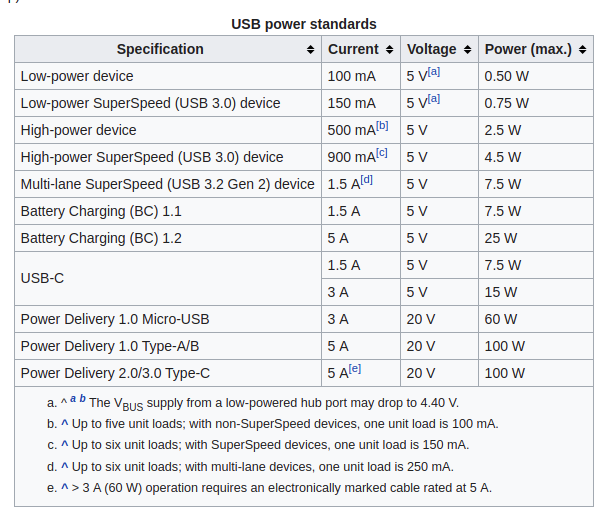
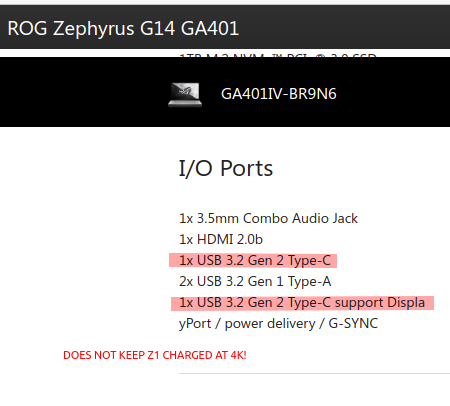
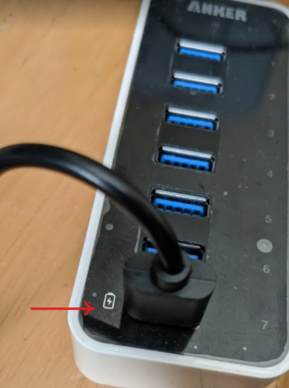
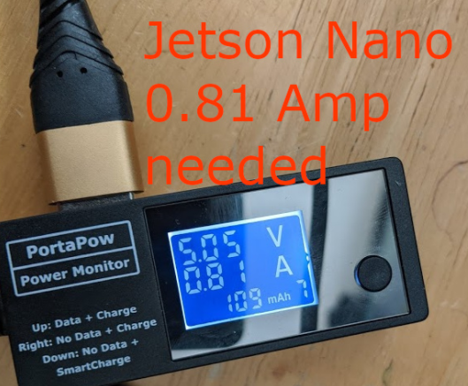
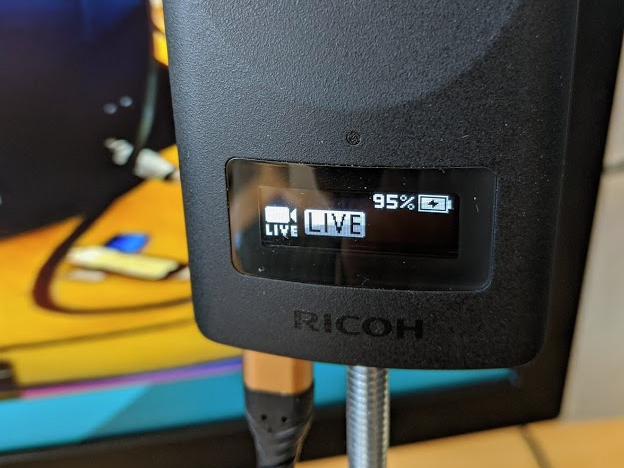

Camera
You need a THETA V or Z1. These cameras live stream with UVC 1.5 in equirectangular. You can also use a THETA S to stream motionJPEG in dual-fisheye.
Streaming Specifications
V and Z1 USB streaming.
- 4K，H264: 3840×1920/29.97fps/120Mbps
- 2K，H264: 1920×960/29.97fps/42Mbps
The modes for the sample program are specified in thetauvc.c.
You can specify the resolution in gst_viewer.c. An example of changing the resolution is here.
Long-Term Streaming
With firmware 1.60.1 or newer, the Z1 can stream indefinitely. The battery will charge when streaming at 4K. To stream indefinitely, you need the proper equipment.
The USB port supplying charge to the RICOH THETA needs to supply approximately 900mA of current.
In my tests, most USB 3.0, 3.1, and 3.2 ports on Linux computers did not supply the required electrical current.
If your computer does not supply 900mA of charge while streaming data, you will need to use a powered hub with the proper specification.
There are different standards for Battery Charging 1.2 for the USB electrical specification. You will need BC 1.2 CDP to provide 1.5A data plus charge. The THETA Z1 will only consume 0.9A of the 1.5A capacity.

It's likely that USB Type-C (not USB 3.0 with a USB-C connector) and USB PD can also deliver over 900mA, but I did not test these. Note that my Asus Zephyrus laptop has USB-C connector ports directly the laptop body, but these physical ports comply to the USB 3.2 specification, not USB-C. USB 3.2 does not require USB Power Delivery.
From the table below, it would appear that USB 3.2 Gen 2 would deliver the required electrical current. However, I wasn't able to keep the Z1 charged indefinitely at 4K with my ROG Zephyrus G14 GA401.

Here's the specifications on my laptop.

After testing streaming on 5 different computers, I could only achieve continuous non-stop streaming on one computer.
From our community tests, it appears that the USB 3.0 (or 3.1, 3.2) port needs to support Battery Charging 1.2 or equivalent. The Z1 consumes 0.6Amp to 0.9Amps while streaming 4K. Without a powered hub, the Raspberry Pi and Jetson Nano cannot stream indefinitely.
I tested an old Anker 7-Port USB 3.0 hub that I had on my desk with a Jetson Nano. The Z1 battery charge increased while it was streaming at 4K. The Z1 camera body remained comfortably warm when I touched it, not hot.
In the test setup below, the Anker USB hub is plugged into a power strip. The hub is above my keyboard.

The hub that I am using only has one port that is BC 1.2 compliant. I needed to use the BC 1.2 port.

If I plugged the Z1 into the other 6 ports, the camera would only consume 0.440 Amps. This is the same electrical current consumption that I saw on the USB 3.1 and 3.2 ports of the computers I tested. With the Z1 drawing 0.440 Amps, the battery will drain during streaming.
Using the BC 1.2 port, the camera draws up to 0.8 Amps to 0.9 Amps while charging and streaming.

After the camera passes 90 percent charge, the charging rate appears to slow down. After a long 4K streaming session on the Nano, the Z1 is staying happy at 95 percent charge.

Long-term Streaming Platform Tests
| Platform | Result |
|---|---|
| Acer Predator 300 laptop with onboard USB 3.1 ports | success. battery charged while streaming |
| Jetson Nano with external powered USB hub with BC 1.2 | success. battery charged. |
| Jetson Nano using onboard USB 3 ports | fail. battery drained. |
| Desktop computer with Intel X99 Wellsburg motherboard and USB 3.1 ports | fail. battery drained |
| Asus Zephyrus laptop with USB 3.2 ports | fail. battery drained |
| desktop computer with Intel B85 motherboard and USB 3.0 ports | fail. battery drained |
Sleep and Power Overview
The camera has three power states:
- Power off
- Power on
- Sleep
You can use the THETA API over a USB cable to control power off, sleep, and awake. To turn on the camera from power off, you can use a C library to power cycle the USB ports on a small board computer such as a Jetson Nano. This is an unofficial community workaround and is not supported by RICOH.
| Function | Method |
|---|---|
| Sleep | USB API |
| Awake | USB API |
| Power Off | USB API |
| Power On | workaround with C library |
Sleep and Wake
If your application can provide power to the THETA or if the THETA does not have to be dormant for a long time, it is better to use sleep and awake. You can use the USB API to control sleep and awake.
We used the following process to test sleep and awake:
- Disable auto power off delay and disable auto sleep - you only need to do this once. The camera will save the setting.
- Put camera to sleep
- Wake camera from sleep
- Check if camera status is ready. If the camera is still asleep, send the wake camera again.
If you do not have any problems waking the camera up from sleep on the first attempt, you may not need step 4.
Power Off and Power On
If you require power off and power on for applications such as placing the THETA on a robot, then shipping the robot to another site, you can use a Nano or Raspberry Pi to power on the THETA.
Turn Camera Off
The camera can be turned off with the USB API.
$ ptpcam -R 0x1013
Turn Camera On Using Jetson Nano
There is no official way to turn on the camera once it is in a power off state. We recommend that you use sleep and awake. If this is not an option, you can turn the camera on by power cycling the USB ports of the Jetson Nano.
This example uses libusb.
Sample Code for Jetson Nano
/****************
* Tested on Jetson Nano running JetPack 4.4
* The RICOH THETA V and Z1 will turn on from a power off state when
* the USB cable is plugged into a port. This example will power cycle
* the USB ports of the Nano. You must have libusb-1.0-0-dev installed
* on the Nano and link to it.
*
* Additional information on using libusb_control_transfer is below.
* https://www.cs.unm.edu/~hjelmn/libusb_hotplug_api/group__syncio.html
*****************/
#include <stdio.h>
#include <string.h>
#include <stdlib.h>
#include <stdint.h>
#include <unistd.h>
#include <libusb-1.0/libusb.h>
unsigned vid = 0x0bda;
unsigned pid = 0x5411;
int power_cycle(libusb_device_handle *hub_devh)
{
int ret = -1;
/*ep0 vendor command enable*/
ret = libusb_control_transfer(hub_devh, 0x40, 0x02, 0x01, ((0x0B<<8)|(0xDA)), 0, 0, 100000);
if (ret < 0) {
printf("[error]:ep0 vendor command enable fail.\n");
return ret;
}
/*ep0 vendor command disable*/
libusb_control_transfer(hub_devh, 0x40, 0x1, 0x08, 0, NULL, 0, 100);
libusb_control_transfer(hub_devh, 0x40, 0x3, 0x08, 0, NULL, 0, 100);
libusb_control_transfer(hub_devh, 0x40, 0x02, 0x00, ((0x0B<<8)|(0xDA)), 0, 0, 100000);
return ret;
}
int main(int argc, char *argv[])
{
int ret=0;
libusb_device_handle *hub_devh;
libusb_context *context;
ret = libusb_init(&context);
if (ret != 0){
printf("[error]:libusb init fail.\n");
return ret;
}
hub_devh = libusb_open_device_with_vid_pid(context, vid, pid);
if (!hub_devh) {
printf("[error]:open device %04x:%04x fail.\n", vid, pid);
return -1;
}
ret = power_cycle(hub_devh);
return ret;
}
You can test the code by first saving the code in a file called,
reset_jetson_usb_power.c then follow these steps:
$ sudo apt-get install libusb-1.0-0-dev
$ gcc -o power_cycle reset_jetson_usb_power.c -lusb-1.0
$ sudo ./power_cycle
Turn Camera On Using Raspberry Pi
install libusb-dev
sudo apt-get install libusb-dev
install hub-ctrl.c
git clone https://github.com/codetricity/hub-ctrl.c
- make and then install in
/usr/local/bin
create shell script to cycle power
Save the following into /usr/local/sbin/cycle-power.sh.
#!/bin/bash
/usr/local/bin/hub-ctrl -h 0 -P 2 -p 0
sleep 2
/usr/local/bin/hub-ctrl -h 0 -P 2 -p 1
Optional - Enable script to run without sudo password
This is a potential security risk. If you want to avoid having to enter a password and are comfortable with the risk, then follow the steps in this article.
Additional Tips for Raspberry Pi 4
Thanks to Shun Yamashita of fulldepth for this solution to cycle the power on the Raspberry Pi 4 USB ports, which has the effect of turning the THETA Z1 on when it is plugged in with a USB cable.
Shun reported that with the Raspberry Pi 4, the script above did not work. He wrote the script below for the RPi 4 which does work.
#!/bin/bash
ptpcam -R 0x1013
/usr/local/bin/hub-ctrl -h 0 -P 1 -p 0
/usr/local/bin/hub-ctrl -h 0 -P 2 -p 0
/usr/local/bin/hub-ctrl -h 0 -P 3 -p 0
/usr/local/bin/hub-ctrl -h 0 -P 4 -p 0
/usr/local/bin/hub-ctrl -h 1 -P 1 -p 0
/usr/local/bin/hub-ctrl -h 1 -P 2 -p 0
/usr/local/bin/hub-ctrl -h 1 -P 3 -p 0
/usr/local/bin/hub-ctrl -h 1 -P 4 -p 0
/usr/local/bin/hub-ctrl -v
sleep 5
/usr/local/bin/hub-ctrl -h 0 -P 1 -p 1
/usr/local/bin/hub-ctrl -h 0 -P 2 -p 1
/usr/local/bin/hub-ctrl -h 0 -P 3 -p 1
/usr/local/bin/hub-ctrl -h 0 -P 4 -p 1
/usr/local/bin/hub-ctrl -h 1 -P 1 -p 1
/usr/local/bin/hub-ctrl -h 1 -P 2 -p 1
/usr/local/bin/hub-ctrl -h 1 -P 3 -p 1
/usr/local/bin/hub-ctrl -h 1 -P 4 -p 1
/usr/local/bin/hub-ctrl -v